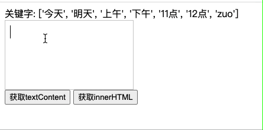

2020/09/07
Author: guoqzuo
输入过程中，怎么实时高亮部分文字(@xxx高亮实现)

实现思路是，使用富文本编辑器，当监听到输入的文件包含关键字时，使用replace对当前的输入内容进行替换，给关键字加上span给个highlight的class，代码如下
<div id="editdiv" contenteditable></div>
<script>
let editdiv = document.querySelector('#editdiv')
// 输入内容改变
editdiv.oninput = (e) => {
let curValue = editdiv.innerHTML
console.log('当前富文本输入内容', curValue)
let needHighlightArr = keyArr.filter(item => curValue.includes(item))
// 开始高亮
needHighlightArr.forEach(item => {
console.log(item, curValue)
// 如果之前已经设置了highlight，就不设置了
let nextText = `<span class="highlight">${item}</span>`
if (!curValue.includes(nextText)) {
curValue = curValue.replace(item, nextText)
}
})
editdiv.innerHTML = curValue
}
</script>1.replace后，光标移动到了输入框最前面
// 解决方法：replace后，把输入光标移动到最后面
// set 光标到末尾
// https://www.cnblogs.com/jonie-wong/p/5519822.html
// div输入@光标定位
// 知乎div编辑器，@功能的光标定位问题
// https://segmentfault.com/q/1010000005617160
function focusToElementEnd(el) {
el.focus();
if (!window.getSelection) {
var range = document.selection.createRange();
this.last = range;
range.moveToElementText(el);
range.select();
document.selection.empty(); //取消选中
}
else {
var range = document.createRange();
range.selectNodeContents(el);
range.collapse();
var sel = window.getSelection();
sel.removeAllRanges();
sel.addRange(range);
}
}2.替换后虽然高亮了，但再次输入的文字，也会一直是高亮的
注意，后面输入的字母没有放到replace span后面
// [Log] 当前富文本输入内容 "123zuo"
// [Log] zuo "123zuo"
// [Log] 替换后，再次获取富文本输入内容 "123<span class="highlight">zuo</span>"
// [Log] 当前富文本输入内容 – "123<span class=\"highlight\">zuok</span>"
// [Log] zuo – "123<span class=\"highlight\">zuok</span>"网上找了下，最相似的答案是 实现动态输入关键字时关键字高亮，从这里捕捉到一个很重要的信息，就是里面提到的是替换text而不是html，而我替换的是innerHTML，所以我换了下思路
在onkeyup键盘抬起时对textContent进行replace，解决了这个问题
const keyArr = ['今天', '明天', '上午', '下午', '11点', '12点', 'zuo']
let editdiv = document.querySelector('#editdiv')
editdiv.onkeyup = (e) => {
console.log('onkeyup', e, editdiv.textContent)
// document.execCommand('forecolor', false, 'black')
let curValue = editdiv.textContent
let needHighlightArr = keyArr.filter(item => curValue.includes(item))
// 开始高亮
needHighlightArr.forEach(item => {
console.log(item, curValue)
// 如果之前已经设置了highlight，就不设置了 class="highlight"
let nextText = `<span class="highlight">${item}</span>`
if (!curValue.includes(nextText)) {
curValue = curValue.replace(item, nextText)
}
})
editdiv.innerHTML = curValue
focusToElementEnd(editdiv) // 将光标移动到末尾
}3.输入法组合文件的过程中也会进行replace，中文无法输入
上面的demo还存在一个问题，就是在输入法组合文件的过程中也会进行replace，导致中文无法输入，这里我们结合之前研究v-model无法实时监听输入法组合文字过程的经验。当组合文字时，不进行替换
<div id="editdiv" contenteditable></div>
<button onclick="alert(document.querySelector('#editdiv').textContent)">获取textContent</button>
<button onclick="alert(document.querySelector('#editdiv').innerHTML)">获取innerHTML</button>
<script>
const keyArr = ['今天', '明天', '上午', '下午', '11点', '12点', 'zuo']
let composition = false // 是否是在输入法组合文字的过程中
let editdiv = document.querySelector('#editdiv')
editdiv.onkeyup = (e) => {
console.log('输入法组合文字过程,composition: ', composition)
if (composition) {
return
}
console.log('onkeyup', e, editdiv.textContent)
let curValue = editdiv.textContent
let needHighlightArr = keyArr.filter(item => curValue.includes(item))
// 开始高亮
needHighlightArr.forEach(item => {
console.log(item, curValue)
// 如果之前已经设置了highlight，就不设置了 class="highlight"
let nextText = `<span class="highlight">${item}</span>`
if (!curValue.includes(nextText)) {
curValue = curValue.replace(item, nextText)
}
})
editdiv.innerHTML = curValue
focusToElementEnd(editdiv) // 将光标移动到末尾
}
editdiv.addEventListener('compositionstart', (e) => {
console.log('oncompositionstart')
composition = true
});
editdiv.addEventListener('compositionend', (e) => {
console.log('oncompositionend')
composition = false
});
</script>以上，我们基本实现了输入过程中实时高亮关键字的功能，替换的细节还需要优化，这里只是一个实现思路。完整demo参见: 输入内容过程中高亮关键字 | github